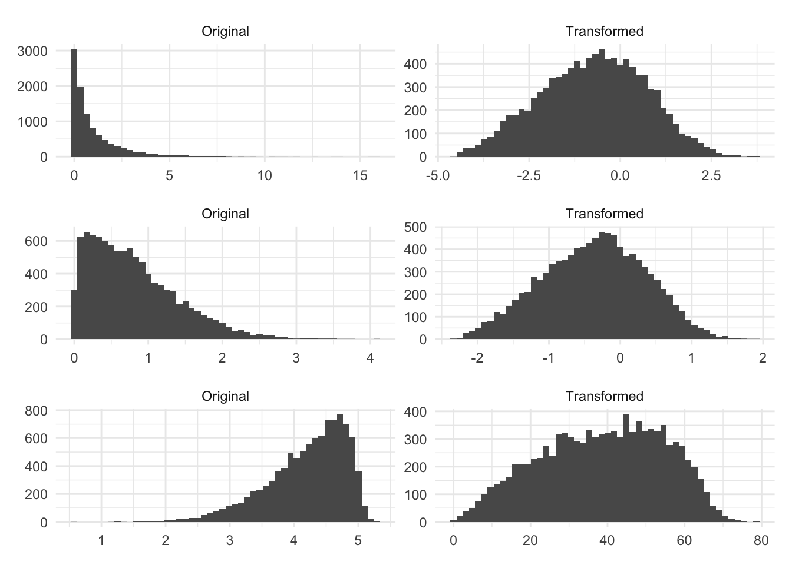
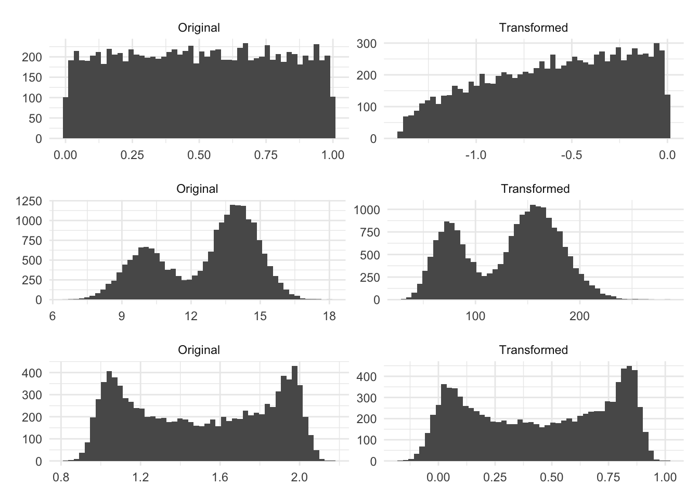

7 Box-Cox
You have likely heard a lot of talk about having normally distributed predictors. This isn’t that common of an assumption, and having a fairly non-skewed symmetric predictor is often enough. Linear Discriminant Analysis assumes Gaussian data, and that is about it (TODO add a reference here). Still, it is worthwhile to have more symmetric predictors, and this is where the Box-Cox transformation comes into play.
In sec-logarithms on logarithms, we saw how they could be used to change the distribution of a variable. One of the downsides is that if we want to get closer to normality, it doesn’t do well unless applied to a log-normally distributed variable. The Box-Cox transformation tries to find an optimal power transformation. This method was originally intended to be used on the outcome of a model.
It works by using maximum likelihood estimation to estimate a transformation parameter \(\lambda\) in the following equation that would optimize the normality of \(x^*\)
\[ x^* = \left\{ \begin{array}{ll} \dfrac{x^\lambda - 1}{\lambda \tilde{x}^{\lambda - 1}}, & \lambda \neq 0 \\ \tilde{x} \log x & \lambda = 0 \end{array} \right. \]
where \(\tilde{x}\) is the geometric mean of \(x\). It is worth noting again, that what we are optimizing over is the value of \(\lambda\). This is also a case of a trained preprocessing method when used on the predictors. We need to estimate the parameter \(\lambda\) on the training data set, then use the estimated value to apply the transformation to the training and test data set to avoid data leakage. Lastly, Box-Cox only works with positive numbers. Take a look at sec-yeojohnson about the Yeo-Johnson method that tries to accomplish the same thing, and it works on positive as well as negative numbers.
Let us see some examples of Box-Cox at work. Below is three different simulated distribution, before and after they have been transformed by Box-Cox.

We have the original distributions have some left or right skewed-ness. And the transformed columns look better, in the sense that they are less skewed and they are fairly symmetric around the center. Are they perfectly normal? No! but these transformations might be beneficial. The next set of distributions wasn’t so lucky.
The Box-Cox method isn’t magic and will only give you something more normally distributed if the distribution can be made more normally distributed by applying a power transformation.

The first distribution here is uniformly random. The resulting transformation ends up more skewed, even if only a little bit, than the original distribution because this method is not intended for this type of data. We are seeing similar results with the bi-modal distributions.
7.1 Pros and Cons
7.1.1 Pros
- More flexible than individually chosen power transformations such as logarithms and square roots
7.1.2 Cons
- Doesn’t work with negative values
- Isn’t a universal fix
7.2 R Examples
We will be using the ames data set for these examples.
library(recipes)
library(modeldata)
data("ames")
ames %>%
select(Lot_Area, Wood_Deck_SF, Sale_Price)# A tibble: 2,930 × 3
Lot_Area Wood_Deck_SF Sale_Price
<int> <int> <int>
1 31770 210 215000
2 11622 140 105000
3 14267 393 172000
4 11160 0 244000
5 13830 212 189900
6 9978 360 195500
7 4920 0 213500
8 5005 0 191500
9 5389 237 236500
10 7500 140 189000
# … with 2,920 more rows{recipes} provides a step to perform Box-Cox transformations.
boxcox_rec <- recipe(Sale_Price ~ Lot_Area, data = ames) %>%
step_BoxCox(Lot_Area) %>%
prep()
boxcox_rec %>%
bake(new_data = NULL)# A tibble: 2,930 × 2
Lot_Area Sale_Price
<dbl> <int>
1 21.8 215000
2 18.2 105000
3 18.9 172000
4 18.1 244000
5 18.8 189900
6 17.7 195500
7 15.5 213500
8 15.5 191500
9 15.8 236500
10 16.8 189000
# … with 2,920 more rowsWe can also pull out the value of the estimated \(\lambda\) by using the tidy() method on the recipe step.
boxcox_rec %>%
tidy(1)# A tibble: 1 × 3
terms value id
<chr> <dbl> <chr>
1 Lot_Area 0.129 BoxCox_3gJXR